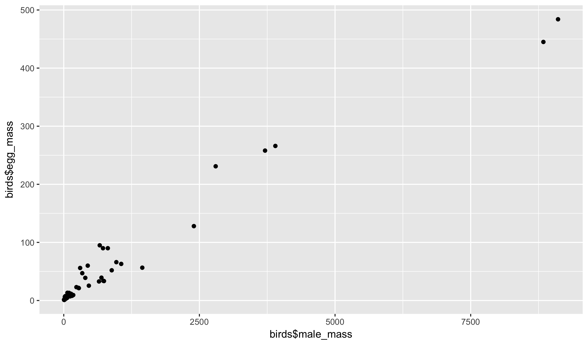
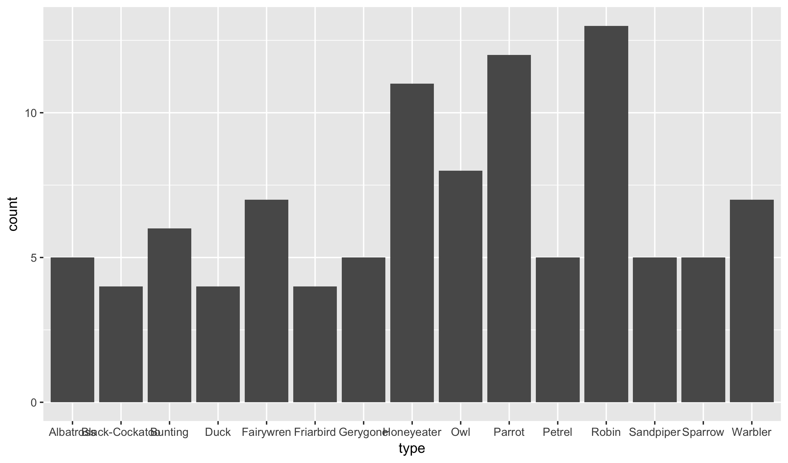
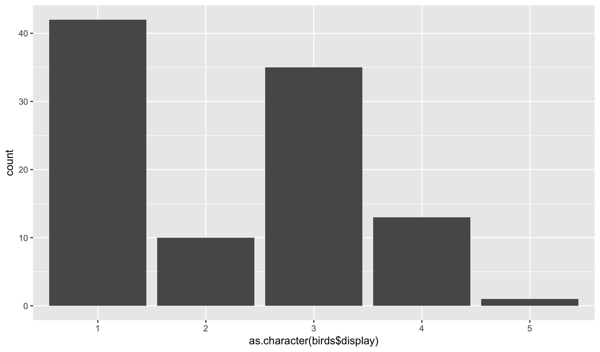
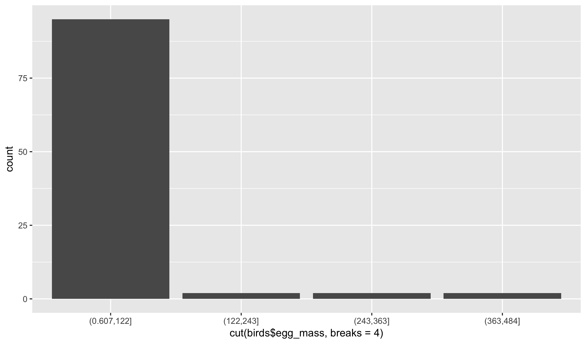

Data creation
To start, we will construct some data set examples on the white boards. Specifically, write down six questions for one of these:
- a job interview
- friend interview
- college admissions
And then give variable names to describe the answer to each. Make sure you have at least a couple questions with numeric answers (e.g., how many times per week do you play sports?)
Variable Types
Variables in R have different types depending on the kind of data that they store. The most common types that you will see are the following three:
- integers (whole numbers)
- doubles (decimal numbers)
- characters
Mostly, you won’t need to worry about the difference between integers and doubles. R with treat them very similarly. However, character vectors are handled quite distinctly from numeric data. There are many other data types that you might encounter; two other relatively common data types deal with time data:
- dates (day, month, and year)
- date-times (date plus hour, seconds, and possibly sub-second info)
Let’s look at a new dataset to see examples of the kinds of data that can be stored in a data frame:
library(readr)
birds <- read_csv("https://raw.githubusercontent.com/statsmaths/stat_data/gh-pages/birds.csv")| genus | species | name | type | egg_mass | male_mass | mating_system | display | resource | clutch_size |
|---|---|---|---|---|---|---|---|---|---|
| Acanthagenys | rufogularis | Spiny-cheeked | Honeyeater | 5.45 | 47.1 | 2 | 3 | 2 | 2.20 |
| Aegolius | funereus | Boreal | Owl | 12.40 | 101.0 | 2 | 3 | 0 | 5.29 |
| Aimophila | ruficeps | Rufous-crowned | Sparrow | 2.90 | 18.1 | 2 | 2 | 1 | 3.45 |
| Ammodramus | bairdii | Baird's | Sparrow | 2.21 | 18.9 | 2 | 2 | 1 | 4.55 |
| Anas | superciliosa | Pacific Black | Duck | 63.00 | 1059.0 | 2 | 2 | 0 | 11.00 |
| Aprosmictus | erythropterus | Red-winged | Parrot | 11.50 | 134.7 | 2 | 3 | 1 | 5.00 |
| Asio | flammeus | Short-eared | Owl | 21.30 | 278.0 | 2 | 5 | 1 | 5.60 |
| Asio | otus | Long-eared | Owl | 23.00 | 233.0 | 2 | 4 | 0 | 3.00 |
| Biziura | lobata | Musk | Duck | 128.00 | 2398.0 | 5 | 1 | 1 | 2.80 |
| Calamospiza | melanocorys | Lark | Bunting | 3.14 | 36.1 | 3 | 4 | 1 | 3.72 |
Do any of the data types surprise you? Hopefully not!
Data Dictionary
We have already discussed a basic data dictionary. It is helpful, to include the variable types in the dictionary, which we will do now going forward. Here is a data dictionary of the birds data:
- genus (chr): taxonomic rank of the bird
- species (chr): scientific species name of the bird
- name (chr): common name of the bird
- type (chr): common name of the type of bird
- egg_mass (dbl): average mass of an egg when laid (grams)
- male_mass (dbl): average observed mass of an adult male (grams)
- mating_system (int): scores of mating system. Intensity of male-male competition increases from 1 to 5.
- (1) polyandry
- (2) monogamy (<5% polygyny)
- (3) mostly monogamy, but occasional polygyny (5–15% polygyny)
- (4) mostly polygyny (> 15% polygyny)
- (5) lek or promiscuous
- display (int): mating display agility
- (1) ground displays only, including displays on trees and bushes
- (2) ground displays, but with occasional jumps/leaps into the air
- (3) both ground and non-acrobatic flight displays
- (4) mainly aerial displays, non-acrobatic
- (5) mainly aerial displays, acrobatic
- resource (int): scores of territoriality and between-mate resource sharing
- (0) males and females don’t share resources and they feed away from their breeding territory
- (1) males and females share resources on their territory only during the breeding season
- (2) males and females share resources on their territory all year round.
- clutch_size (dbl): average number of eggs produced per clutch
Notice that the last two variables are integer codes. They are stored as numbers but also correspond to a category. The schema describes this in detail.
Plot by Variable Type
One reason that we care about data types is that it changes the types of plots that we can create. Here is a scatter plot of two numeric variables:
library(ggplot2)
qplot(birds$male_mass, birds$egg_mass)
And a bar plot of a categorical one:
qplot(type, data = birds)
Other functions related to graphics and modelling also change based on the type of a variable, so it is quite important to make a note of these.
Converting to Characters
We can use the as.character function to convert from a number
to a category. For example, here is a bar plot of the display
integer codes:
qplot(as.character(birds$display))
Does it make sense in this context to describe the display variable as a categorical variable?
Grouping Numeric Data
We can also use the cut function to break a numeric variable into
contiguous groups. We have to specify the number of groups in a second
argument to the function, like this:
qplot(cut(birds$egg_mass, breaks = 4))
The function breaks the range of the numeric variable into equal chunks.
Unlike the as.character function, the cut function makes sense for
any numeric variable. Would as.character be useful on the variable
egg_mass?
GitHub Classroom
In order to submit the projects, you’ll need to create a GitHub account and set-up GitHub classroom. I will do this interactively in class, but here are the steps in case you are returning to these notes at a later time:
- I will send a link to your e-mail that you should follow and accept. Assuming you have a valid GitHub account, this will set up a repository where all of your projects for this semester should be posted.
- Download the project starter code and open it in RStudio.
- When you are finished, select the
Knit to HTMLbutton. This should create an html file in the same location that you saved the Rmd file. You should also have a fileclass01_submit.csvin the same location. - Return to GitHub and drag and drop the three files into your repository. Commit these to the repository with the Commit changes button and then you are done! If dragging and dropping does not work (only officially support on Chrome I believe), select Upload files and do so manually.
Remember that I will not accept late submissions of the projects. It is always better to hand something in on time.